Importação BDF/BAU
Este guia apresenta o fluxo para importar arquivos BDF/BAU no SECTagf, conferir os atendimentos com o arquivo CSV gerado no Correios Atende, atribuir cliente e contrato e validar os valores por subcaixa.
1. Verificar atualizações
Antes de iniciar a importação, verifique se existem atualizações disponíveis. Essa consulta pode ser feita pelo SECT ou pelo MeusCorreios; não é necessário conferir nos dois locais.
Verificar atualizações no SECTagf
Se optar pelo SECTagf, acesse Utilitários → Busca Atualizações e confira os componentes disponíveis.
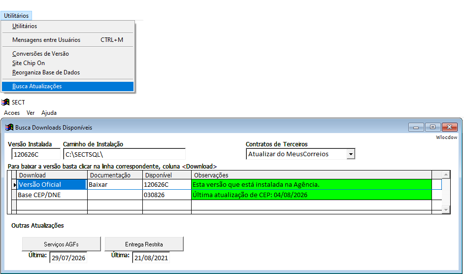
Verificar arquivos no MeusCorreios
Se optar pelo MeusCorreios, consulte a área de Últimas atualizações e baixe os arquivos disponibilizados para o sistema.
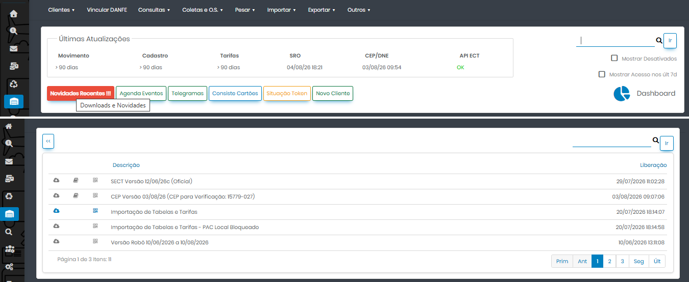
Grupo de WhatsApp
O grupo é um canal para as agências trocarem informações e para o envio de recados importantes. Caso a agência ainda não faça parte, basta solicitar a inclusão.
Acompanhar os avisos no blog
No blog da Chip On são publicados avisos sobre reajustes de tarifas, abrangências atualizadas — principalmente de serviços como SEDEX 10 e SEDEX 12 — e orientações sobre outros processos. Acesse: www.chipon.com.br.
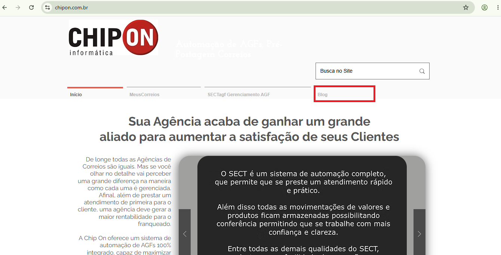
2. Gerar o CSV no Correios Atende
Gere o arquivo CSV antes de iniciar a importação no SECT. Esse arquivo será usado na conferência dos atendimentos e na identificação dos dados de contrato e cartão.
2.1. Acessar a ferramenta
Entre no Correios Atende e acesse a opção utilizada para gerar o arquivo do período que será importado.
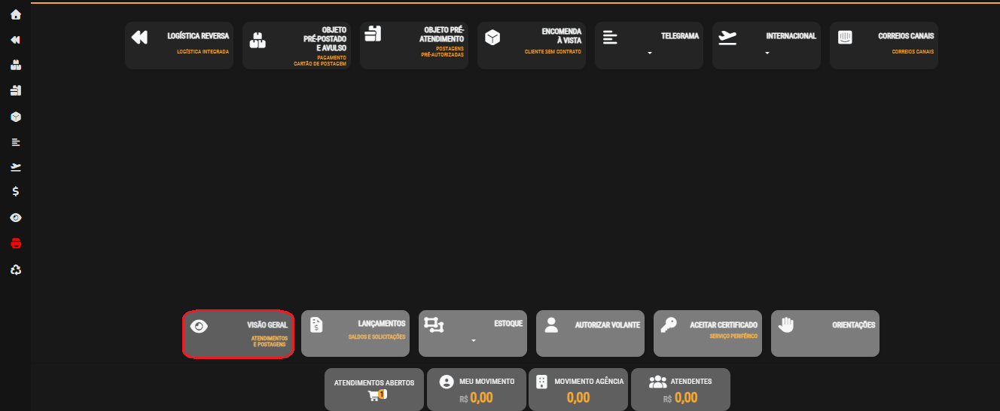
2.2. Gerar e baixar o arquivo
Configure o período, gere o arquivo e faça o download. Não é necessário mover ou renomear o CSV; apenas anote a pasta em que ele foi salvo, normalmente Downloads, pois ela será indicada durante a conferência no SECT.
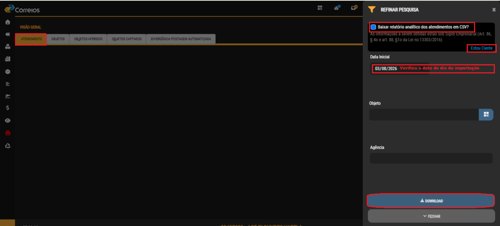
3. Atribuir atendimentos realizados no Correios Atende
O procedimento é semelhante ao utilizado para as vendas do SARA. A diferença é que, para esses registros, deve ser selecionado o caixa CA.
3.1. Selecionar o caixa CA
- No menu SARA/CA, acesse Faturar Clientes antes da Importação.
- Quando solicitado, informe os quatro dígitos do CPF usados no procedimento.
- No campo Sub-Caixa CA, selecione o subcaixa correspondente ao atendimento.
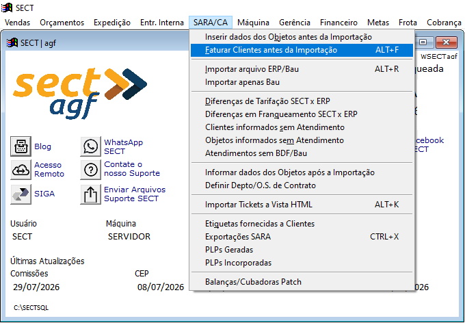
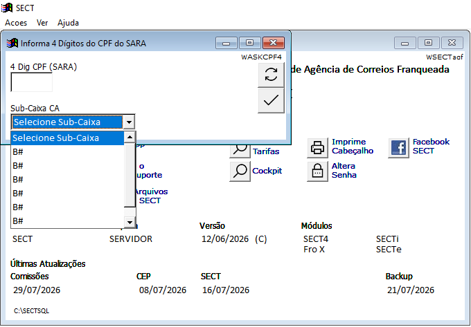
3.2. Localizar o atendimento
Quando for necessário identificar um registro específico, use o número do atendimento impresso no comprovante do Correios Atende para localizar o lançamento no SECT. Também é possível recuperar o número fazendo a leitura do QR Code do comprovante.
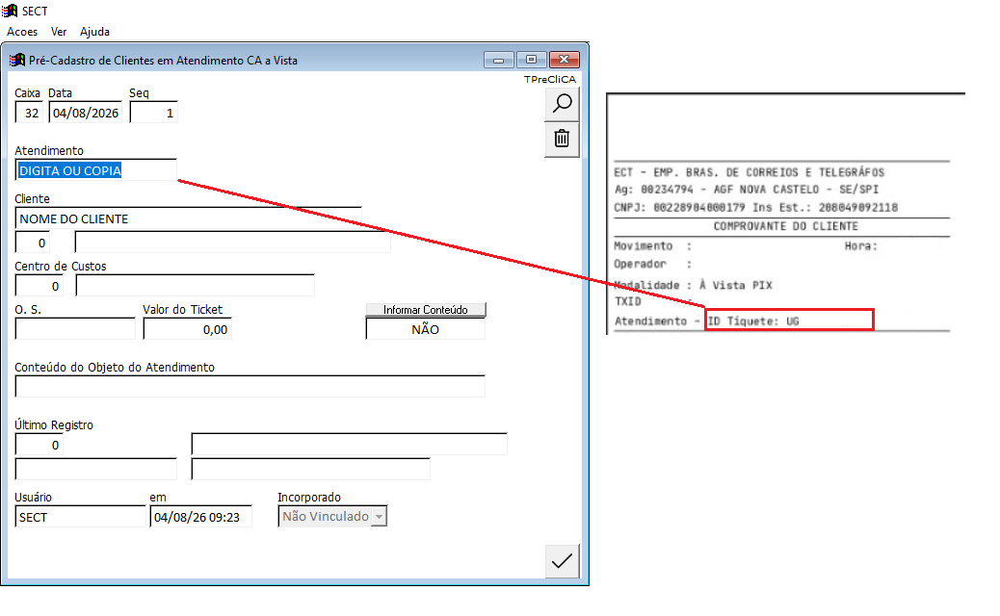
4. Importar o BDF/BAU
Inicie o processo de BDF normalmente. Durante a importação, será aberta uma tela adicional para carregar o arquivo BAU e fazer a conferência com o CSV do Correios Atende.
4.1. Iniciar a importação
- No menu SARA/CA, acesse Importar arquivo ERP/BAU.
- Na tela de importação, clique em F6 Importa MeusCorreios.
- Aguarde a leitura dos objetos. O andamento será exibido na barra inferior da tela.
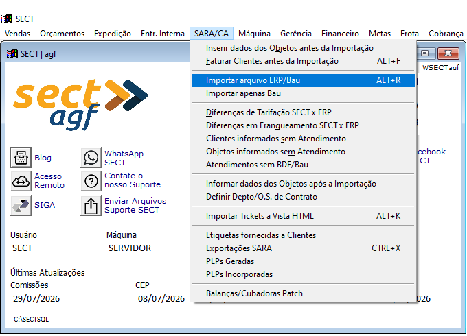
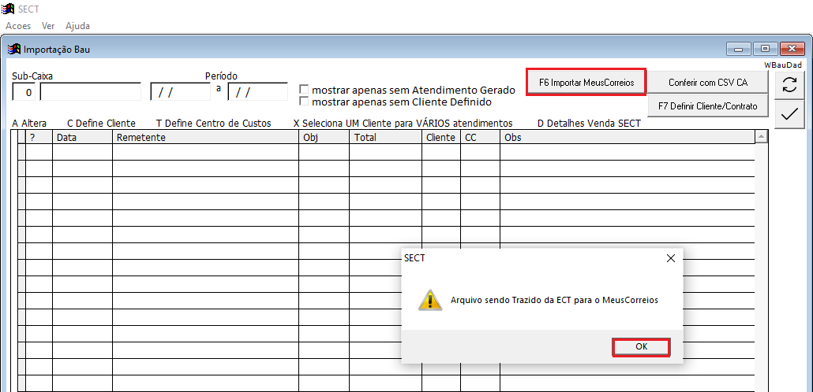
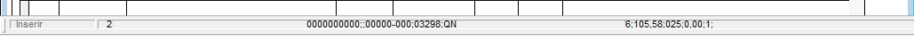
4.2. Conferir com o CSV CA
- Clique em Conferir com CSV CA.
- Confirme a importação do arquivo CSV para conferência.
- Indique a pasta em que o arquivo foi baixado e selecione o CSV correspondente ao período.
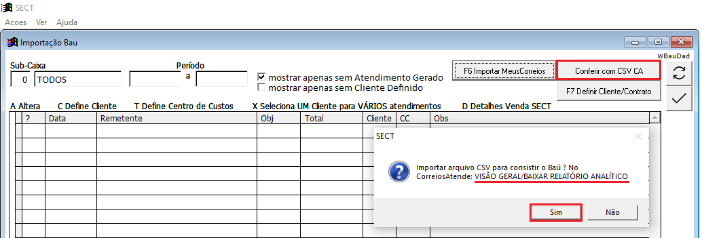
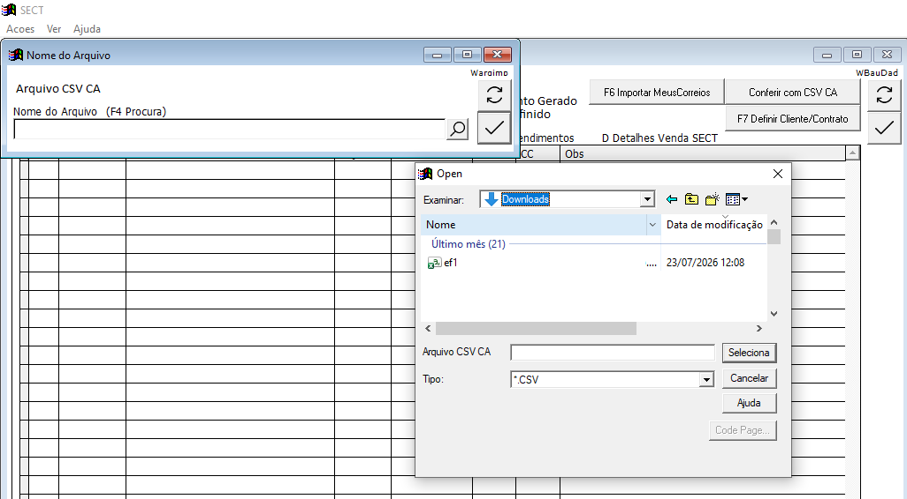
4.3. Definir cliente e contrato
- Clique em F7 Define Cliente/Contrato.
- O SECT reconhecerá automaticamente os clientes que já possuem dados de contrato cadastrados.
- Os atendimentos lançados no item 3 também serão atribuídos automaticamente nesta fase.
- Para clientes de logística reversa, faça a inclusão conforme o procedimento adotado pela agência.
- Após concluir as atribuições, feche a tela e continue o BDF.
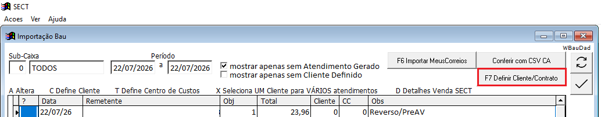
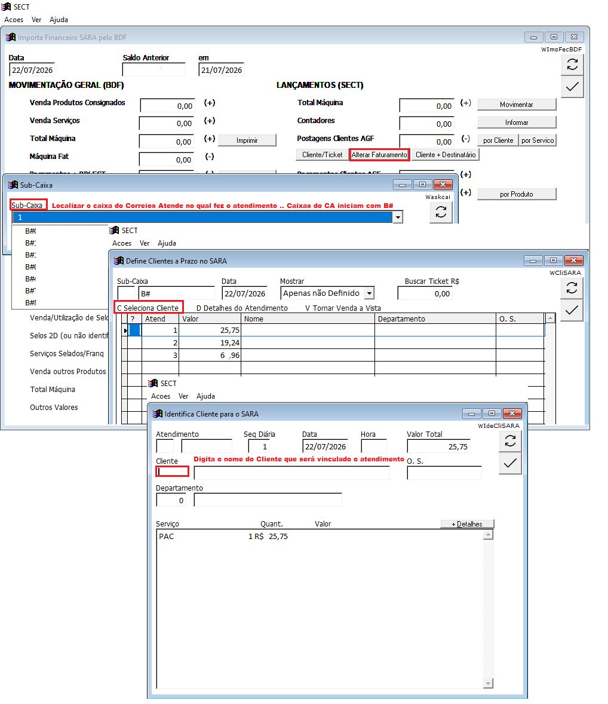
5. Conferir o relatório de subcaixas
Ao finalizar, verifique se o valor geral do Correios Atende confere com os valores importados no SECT. Depois, repita a conferência por subcaixa.
| Conferência do exemplo | Valor no SECT | Valor no CA | Resultado |
|---|---|---|---|
| Postagens de contrato | R$ 36.210,68 | R$ 36.210,68 | Valores conferem |
| Postagens à vista/PIX | R$ 1.352,69 | R$ 1.804,50 | Diferença de R$ 451,81 |
Na análise por subcaixa, confirme os valores de postagens de contrato e o total de postagens à vista. Lembre-se de que o SECT divide os serviços à vista entre PIX, a prazo e saldo em dinheiro.
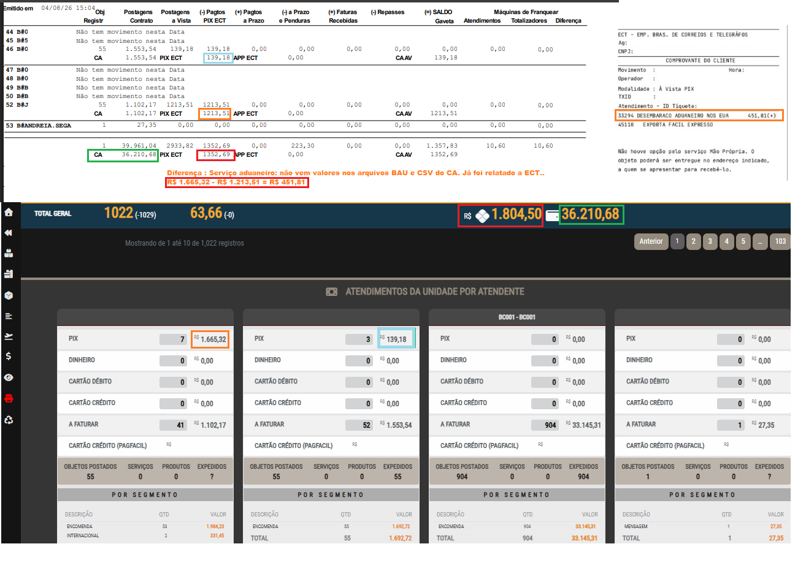
6. Objetos ausentes e reprocessamento
6.1. Solicitar uma nova geração à ECT
Abra a solicitação conforme o modelo abaixo e informe os dados necessários para o reprocessamento, incluindo a data da postagem.
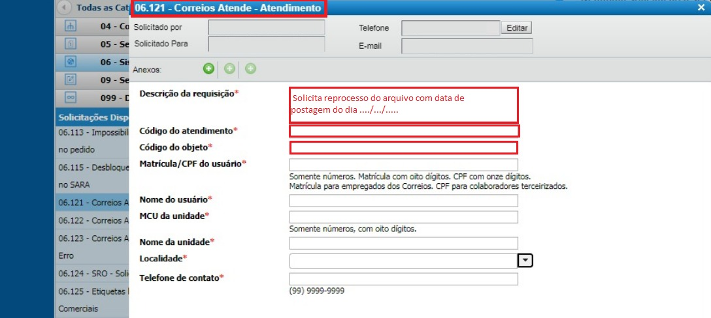
6.2. Reprocessar o arquivo BAU do Correios Atende
Depois que a ECT responder por e-mail informando que o arquivo pode ser importado novamente, aguarde em média 40 minutos antes de iniciar o reprocessamento.
- Acesse Gerência → Ajustes Posteriores à Importação do BDF.
- Informe a data a ser reimportada e confirme.
- Na tela do fechamento/importação, clique em Acessar BAU. O relatório de subcaixa pode ser fechado antes de continuar.
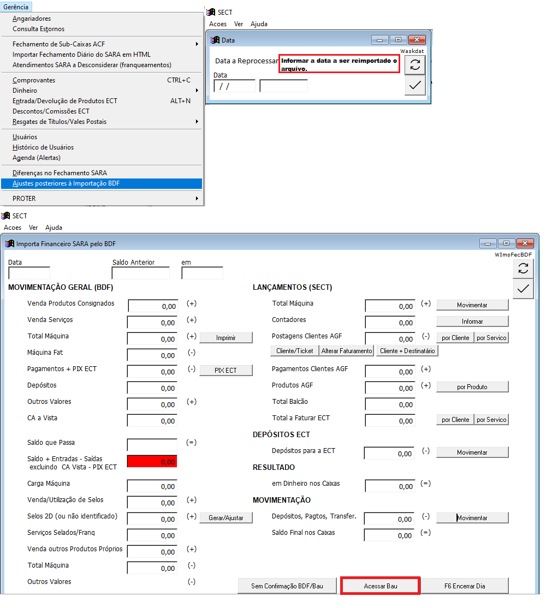
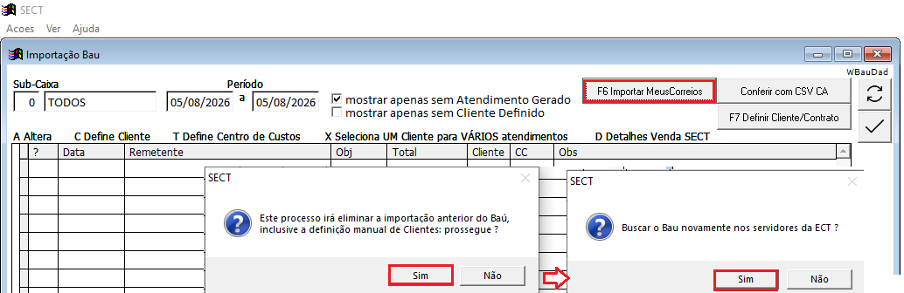